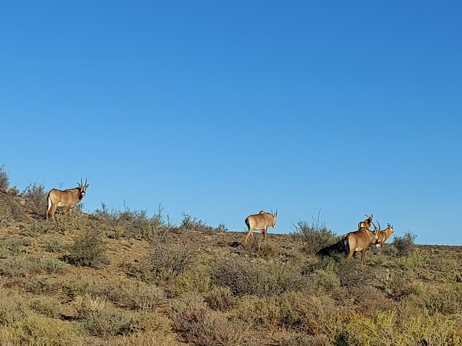
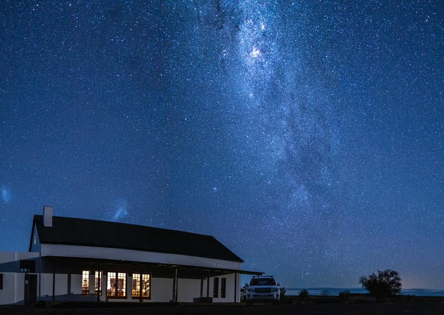
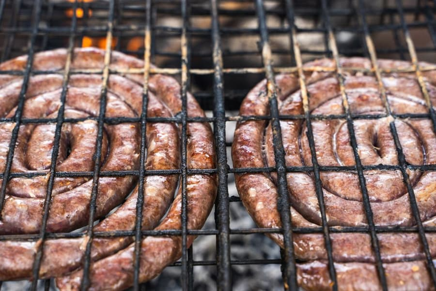

The Karoo Experience: 18,200 Hectares of Hunting Country
A conservation-through-hunting farm in the heart of the Karoo, with the food, skies and hospitality the region is known for.
Est. 2015
A legacy of conservation through hunting
Arno Steenkamp established Hartsrust in 2015 as a hunting farm built on a conservation-through-hunting model, where responsible hunting sustains the land and the game that lives on it.
Today the farm spans more than 18,200 hectares of pristine Karoo. The terrain changes from rivers and bush areas to open veld and koppies, which gives hunters real variety over a multi-day hunt: long shots across the plains, stalks through cover, and waterbank setups along the rivers.

The hunting ground
A wildlife haven in the heart of the Karoo
Hartsrust's varied habitats hold an impressive diversity of plains game. Springbuck roam in multiple colour varieties alongside gemsbuck, black, blue and golden wildebeest, lechwe, sable and roan, so every drive across the farm is a chance to spot something new.
Hunters can plan a trip around a single trophy or work through a collection like the Springbuck Slam or Wildebeest Slam.

After the hunt
Sunset drives and Karoo night skies
Explore the farm's habitats from the riverbanks to the open veld, then wind down with a sunset drive and some of the clearest night skies in the country. Stargazing from the stoep is part of every trip, and night excursions of about 2 to 3 hours can be arranged on request.

Taste of the Karoo
Hearty Karoo food for hungry hunters
No Karoo hunt is complete without the food. Enjoy roosterkoek, kerrie mince, vetkoek, potbrood, hearty liver dishes and fresh springbuck fillet tartare.
Lunch is included in the day fee, and you can choose full catering with continental breakfast, lunch and dinner, or self-cater in the farm houses' full kitchens.

Beyond the hunt
Something for the whole hunting party
Between hunts, or for the non-hunters in your group, there's plenty to do on the farm. It makes Hartsrust a good fit for corporate getaways and mixed groups.
- Clay pigeon shooting
- Mountain biking
- Game drives
- Nature photography
Outside hunting season
Visit the Karoo off-season
From October to February, when the hunting season is closed, non-hunting guests are welcome to stay at Hartsrust at our standard accommodation rates: R1,000 per person per night self-catering, or R2,000 per person per day fully catered.
Your Karoo hunt awaits
Check the 2027 trophy fees and day fees, then get in touch to plan your dates.